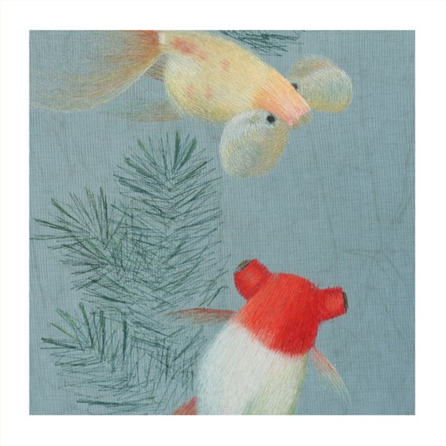
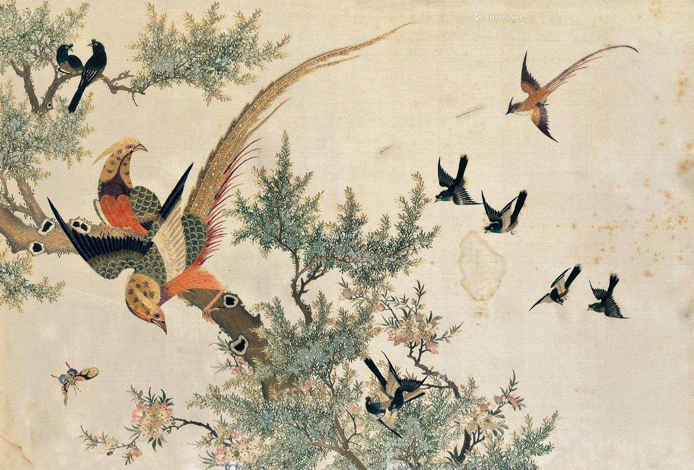

Four famous Chinese embroidery

1. Suzhou embroidery (Jiangsu) - delicate and exquisite, soft colors, superb craftsmanship, famous for double-sided embroidery.

2. Hunan embroidery (Hunan) - focuses on three-dimensionality and layering, and is good at animal embroidery, such as tigers and lions.

3. Yue embroidery (Guangdong) - bright colors, magnificent style, often used in costumes, home decorations, etc.

4. Shu embroidery (Sichuan) - with various stitches and bright colors, it is often used for quilt covers, curtains, etc.